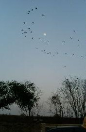
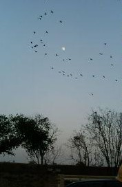

Free talk 雑談。
（323）月に雁 最近の最高傑作  σ(-_-)としては、コレ↓にも負けないくらいの傑作と... http://www.wbsj.org/blog/ms.cgi?t=sketch&blogid=6&ShowDiary_file=/nature/1226479924
最近の最高傑作

σ(-_-)としては、コレ↓にも負けないくらいの傑作と... http://www.wbsj.org/blog/ms.cgi?t=sketch&blogid=6&ShowDiary_file=/nature/1226479924
以前へ 以降へ 目次へ